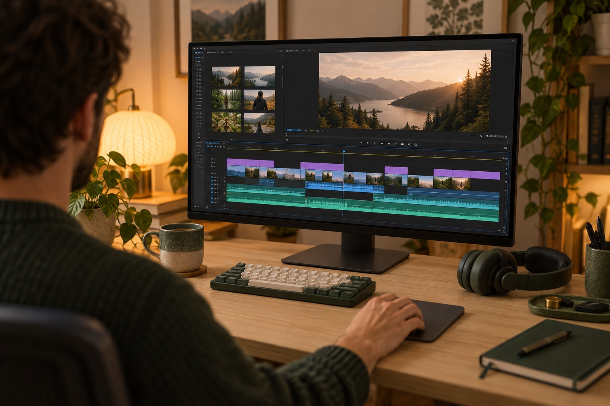

不只是程序员，
所有需要一台不关机的电脑的人。
写代码、剪视频、出图、跑店铺，最耗时的那部分都可以交给远程电脑。你的笔记本留给你自己用。
01
个人 Agent 用户
让 nanoMuse 一直在线：在后台推进你的目标，事情发生时自动开工，跨手机和电脑替你动手。
常选 · Mac mini 入门配置 02AI 编程与独立开发者
Codex、Claude Code 通宵跑任务，白天只看结果和 diff。
常选 · Mac / Linux · 32 GB 03AI 剪辑与视频制作
长视频导出、AI 字幕、批量转码交给远程电脑。
常选 · Mac mini M4 Pro 04AIGC 与设计创作者
在带 GPU 的主机上跑 ComfyUI，批量出图、生成视频。
常选 · Windows · RTX 显卡 05iOS / Flutter 编译团队
用真实的 Mac 签名、归档、上传 TestFlight。
常选 · Mac mini M4 Pro 06跨境电商与海外运营
在当地的真实家庭网络里看店铺、价格、内容和发布时间。
常选 · Windows · 住宅 IP 07移动办公的远程工作者
一部手机加任意一块屏幕，就能接上自己的完整工作环境。
常选 · Mac · VS Code Web 08需要长期在线电脑的团队
定时任务、监控、构建机，不用自己管机房和停电。
常选 · 多台 · 按年付
重点场景 · AI 剪辑与视频制作
导出、转码、生成，
交给远程电脑通宵去做。
长视频导出和批量生成最占机器。把它们放到远程电脑上，你自己的电脑不卡、不烫，也不用一直开着。
- 剪映、DaVinci Resolve、Final Cut Pro 跑在独享的 Mac 或 Windows 上
- 长视频导出、AI 字幕、批量转码 晚上开始，第二天早上收结果
- ComfyUI、Stable Diffusion 在带 GPU 的主机上批量出图、生成视频
- 素材在远程电脑上下载，成片直接上传，不占你家里的上行带宽